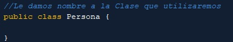
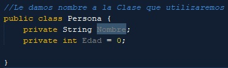
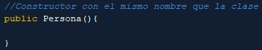
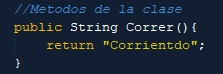
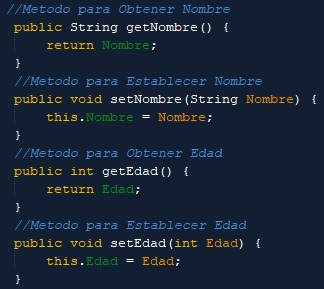
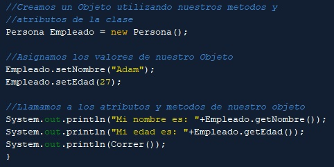

¿Que es una Clase en Java? |
Las clases son la base de la Programación Orientada a Objetos. Una clase es una plantilla
que define la forma de un objeto; en ella se agrupan datos y métodos que operarán sobre esos datos. En
java, una clase se define con la palabra reservada class. |
Como crear una clase en Java: |
Paso 1: Debemos primero escoger que tipo de permisos poseera nuestra clase,
ya sea: public, private o protected, esto sera para asignar los permisos que tendra en la aplicacion para que otras clases
puedan verlo, luego escojemos un nombre para la clase que necesitamos, debe de poseer un nombre que
este relacionado al trabajo que estamos realizando |

Paso 2: Debemos asignarle a nuestra clase atributos, estos seran las caracteristicas que poseera
nuestra clase, primero le colocamos el tipo de atributo que se le ingresara a nuestra clase y
le colocamos los permisos de quienes podran ver estos atributos afuera de la clase |

Paso 3: Luego de haber asignado nuestros atributos, debemos crear nuestro constructo de nuestra clase,
este se encargara de inicializar la instancia de nuestra clase, el constructor debe de lleval el mismo nombre que la clase |

Paso 4: Asignamos los metodos que utilizara la clase, estos son las acciones que la clase puede realizar
dentro del programa |

Paso 5: Creamos los Set y Get de nuestra, estos metodos nos permiten poder acceder a los atributos de
nuestra clase, Con los Get podemos recuperar los valores de los atributos que posee nuestra clase y con los Set podemos asignarle
valores que van a poseer los atributos de la clase |

Ejemplo de como se utilizaria Set y Get: |
